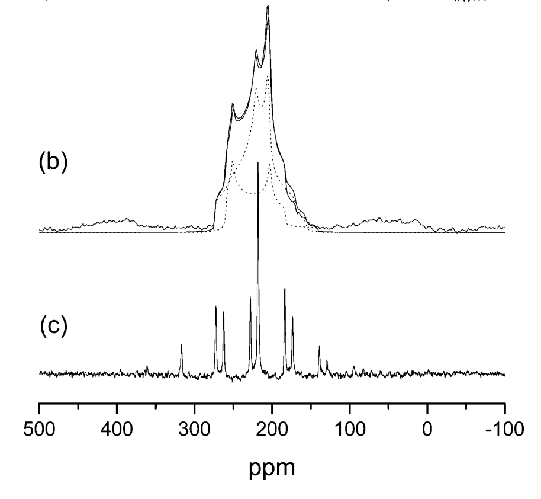
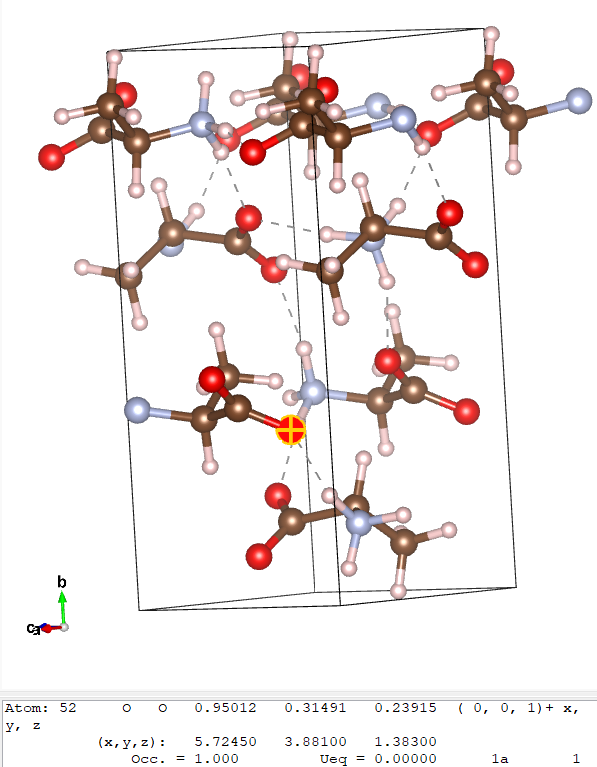
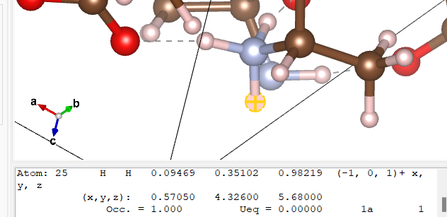

示例 3：丙氨酸与硅酸盐
我们现在来看一些更现实且复杂的结构——氨基酸丙氨酸以及两种不同的硅酸盐：结晶石英和石英。这些晶体相对较大，为了在较短时间内完成计算，我们将它们在集群上运行。 使用以下数量的CPU：
- 对氨基苯甲酸 - 4
- 结晶石英-6
- 石英 - 13
（这些数值被选择以实现高效的k点缩放）
我们还将对上述结构进行EFG计算，并检查相应的数据。
氧-17 核磁共振
氧是许多地质材料的组成部分。由于氧常常参与氢键，因此它也是有机和生物分子中的重要元素。固态 17核磁共振（NMR）应是一种独特而有价值的探针，因为其化学位移范围为 17O 的含量在有机分子中几乎达到1000 ppm。此外 17O 的自旋 I = 5/2，因此具有净四极矩。由于这一特性，固体状态核磁共振谱受到原子核处电场梯度的显著影响。
因为同位素丰度为 17O 的含量非常低（0.037%），由于电场梯度引起的核磁共振线宽相对较大，目前可获得的固体状态核磁共振数据十分有限。这一点在有机材料中尤为明显。已有第一性原理计算结果表明： 17¹H NMR 参数在分配实验谱图以及建立 NMR 参数与局部原子结构之间的经验规则方面发挥了至关重要的作用。
丙氨酸
检查输入和输出
我们将使用单元格文件
说明
不必担心它有多长或多复杂——它和其他任何内容都没有区别。 单元格文件 - 它只是简单地定义了一个大单元格
以及参数文件 alanine.param
fix_occupancy = true
opt_strategy : speed
task = magres
magres_task = nmr
cut_off_energy = 35 ry
xc_functional : PBE
这导致进行EFG计算。
alanine.param](alanine/alanine.param)
您可能还希望查看该文件
在 Materials Studio 或其他软件中——这有助于更细致地观察诸如氢键等特征。这是从以下下载的原始文件： 剑桥晶体学数据库 （并被用于获得） alanine.cell 文件）。晶胞结构通过中子衍射实验获得。
我们现在将运行castep。The alanine.castep 输出文件应包含的 表格
这与我们的情况非常相似。 之前的 结果，除了现在多了两列外—— C_Q 并且 Eta — 这两个文件都存在，是因为现在进行了EFG计算。
此结果尚未完全收敛（在本教程中我们不会对此进行测试，但欢迎自行验证），但部分原子位置之间的相对位移已收敛（同样，您可以自行验证）。
分析并对比实验结果
我们现在将把这些结果与实验进行比较。下面的图是实验结果。 17L-丙氨酸的¹³C NMR谱图显示两个峰，由于四极耦合而非常宽，并且发生重叠。

实验参数见下表1。
| \delta(A)-\delta(B) (ppm) | 23.5 |
| C_Q（A）（兆赫） | 7.86 |
| \eta_Q(A) | 0.28 |
| C_Q（B）（兆赫） | 6.53 |
| \eta_Q(B) | 0.70 |
| 表1：实验数据 17丙氨酸的¹³C NMR参数。两个共振峰标记为A和B。各向同性化学位移 \delta，四极耦合 C_{Q}，以及EFG不对称性 \eta_Q. |
从这一点出发，我们将尝试找出A和B的值。
为此，我们将考察 alanine.castep 张量表.
通过快速查看表格，我们发现氢的化学位移范围为20-30ppm，碳约为0、124或159ppm，氮为194ppm，氧为48或63ppm。由于这一情况，我们可以判断这两个共振信号属于碳和氧：要获得23.5ppm的化学位移差，只有氧的48ppm和一个氢（理想值为24.5ppm）的组合才能接近该数值。
我们在表格的氧部分看到
===============================================================================
| Chemical Shielding and Electric Field Gradient Tensors |
|-----------------------------------------------------------------------------|
| Nucleus Shielding tensor EFG Tensor |
| Species Ion Iso(ppm) Aniso(ppm) Asym Cq(MHz) Eta |
| O 1 48.29 352.85 0.51 7.125E+00 0.25 |
| O 2 62.86 255.66 0.71 5.794E+00 0.64 |
| O 3 48.29 352.85 0.51 7.125E+00 0.25 |
| O 4 62.86 255.66 0.71 5.794E+00 0.64 |
| O 5 48.29 352.85 0.51 7.125E+00 0.25 |
| O 6 62.86 255.66 0.71 5.794E+00 0.64 |
| O 7 48.29 352.85 0.51 7.125E+00 0.25 |
| O 8 62.86 255.66 0.71 5.794E+00 0.64 |
===============================================================================
那化学位移始终在48.29和62.86之间交替。为了探究其原因，我们可以考察一下 alanine.cell 文件在 Vesta（或）中 alanine.pdb 在Materials Studio中打开文件，或选择您偏好的其他选项（如显示氢键的工具）。与之类似地 示例 1，我们将检查哪些原子对应于何种环境。
下方展示了晶胞以及一个特意突出显示的原子。

氧原子是红色的原子。我们在这里看到，实际上存在两种类型的氧原子——那些参与氢键（用虚线连接到一个氢原子（灰色原子））的，以及那些不参与氢键的。这里的原子52（氧离子8） 表格；它从第44个原子开始（因为在该位置之前有44个原子），其化学屏蔽值为62.86 ppm，如上所示。当点击任何一个形成两个氢键的氧原子时，对应的是一个屏蔽张量为6或86 ppm的原子，而所有仅形成一个氢键的氧原子的值均为48.29 ppm。在本次练习中，我们已经确定共振A来源于一个仅与一个氢键相连的氧原子。
氢原子数量要多得多，因此很难确定A具体指的是哪一个。因为 \delta(A) - \delta(B) = 23.5 ppm，我们知道化学屏蔽的值应约为 48.29 - 23.5 = 24.79ppm
从表格中可以看到，最接近的值是 24.01 ppm，对应原子 1、8、15 和 22。通过点击氢原子直到找到其中一个时，我们发现

这三个氢原子都与一个氮原子成键，该氮原子还连接了两个氢原子和一个碳原子。它与其他两个氢原子不同，因为与其形成氢键的氧原子没有其他氢键：A 和 B 之间彼此形成了氢键。
这些结果也由表中提供的其他数值所证实。为确认A为氧1（或3或5……—所有值均相同）， C_Q 在 表格 是 7.125MHz，相比预期的 7.86MHz，和 \eta_Q 是 0.25，相比预期的 0.28——结果非常相似。
然而，氢的情况并非如此——一个 C_Q 为 6.53MHz 和一个 \eta_Q 预期值为0.7，但CASTEP的结果分别为0.21MHz和0.06。事实上，唯一一个接近匹配的离子是 C_Q eta_Q 期望的是另一种（偶数编号）氧原子类型：即与所关注的氢原子（1、8 和 15）形成氢键的氧原子。
硅酸盐——石英与 cristoballite
作为一个额外的例子，我们现在将对两种硅酸盐——结晶石英和石英——进行类似的计算及相应的分析。当然，我们将分别对castep计算进行处理。
输入和输出文件
对于石英，我们将使用单元格文件
以及参数文件 quartz.param
cut_off_energy = 40 ry
xc_functional : PBE
fix_occupancy = true
opt_strategy : speed
task = magres
magres_task = nmr
elec_energy_tol = 1.0e-12 ry
参数文件与上面的丙氨酸文件完全相同。
对于结晶石英，我们将使用单元格文件
和上面完全相同的参数文件（只是名称不同） crist.param （相反）
然后我们像平常一样在两种晶体结构上运行castep，得到输出文件 quartz.castep 并且 crist.castep在这些文件中，我们将有上述类型的表格：
对于石英：
===============================================================================
| Chemical Shielding and Electric Field Gradient Tensors |
|-----------------------------------------------------------------------------|
| Nucleus Shielding tensor EFG Tensor |
| Species Ion Iso(ppm) Aniso(ppm) Asym Cq(MHz) Eta |
| O 1 234.54 68.31 0.12 -5.085E+00 0.20 |
| O 2 234.54 68.30 0.12 -5.086E+00 0.20 |
| O 3 234.54 68.30 0.12 -5.086E+00 0.20 |
| O 4 234.54 68.30 0.12 -5.086E+00 0.20 |
| O 5 234.54 68.30 0.12 -5.086E+00 0.20 |
| O 6 234.54 68.31 0.12 -5.085E+00 0.20 |
| Si 1 435.01 -5.44 0.82 2.067E+01 0.72 |
| Si 2 435.01 -5.45 0.81 2.067E+01 0.72 |
| Si 3 435.01 -5.44 0.82 2.067E+01 0.72 |
===============================================================================
以及对于结晶石英
===============================================================================
| Chemical Shielding and Electric Field Gradient Tensors |
|-----------------------------------------------------------------------------|
| Nucleus Shielding tensor EFG Tensor |
| Species Ion Iso(ppm) Aniso(ppm) Asym Cq(MHz) Eta |
| O 1 239.47 79.97 0.08 -5.055E+00 0.14 |
| O 2 239.47 79.97 0.08 -5.055E+00 0.14 |
| O 3 239.47 79.97 0.08 -5.055E+00 0.14 |
| O 4 239.47 79.97 0.08 -5.055E+00 0.14 |
| O 5 239.47 79.97 0.08 -5.055E+00 0.14 |
| O 6 239.47 79.97 0.08 -5.055E+00 0.14 |
| O 7 239.47 79.97 0.08 -5.055E+00 0.14 |
| O 8 239.47 79.97 0.08 -5.055E+00 0.14 |
| Si 1 437.12 -9.36 0.61 -1.077E+01 0.88 |
| Si 2 437.12 -9.36 0.61 -1.077E+01 0.88 |
| Si 3 437.12 -9.36 0.61 -1.077E+01 0.88 |
| Si 4 437.12 -9.36 0.61 -1.077E+01 0.88 |
===============================================================================
分析并对比实验结果
如同与丙氨酸相比，我们将将其与实验结果进行比较。 17¹H NMR 参数表——如下以表2的形式展示
| \delta （ppm） | C_Q (兆赫兹) | \eta_Q | |
|---|---|---|---|
| 材料A | 37.2 | 5.21 | 0.13 |
| 材料B | 40.8 | 5.19 | 0.19 |
| 表2：实验数据 17两种硅酸盐的¹⁹F NMR参数。各向同性化学位移 \delta ，四极耦合 C_Q，以及EFG不对称性 \eta_Q. |
这个例子要直接得多——某种元素的所有原子都是相同的。
我们已知一个合适的 \sigma_{ref} （对于氧）为263ppm。使用该方程 \delta_{iso}=\sigma_{iso} - \sigma - 在之前使用过 示例 1 — 我们能够将等轴化学屏蔽张量转换为相对化学位移：在石英中，氧的化学位移为 28.46 ppm，在水晶石中为 23.53 ppm。